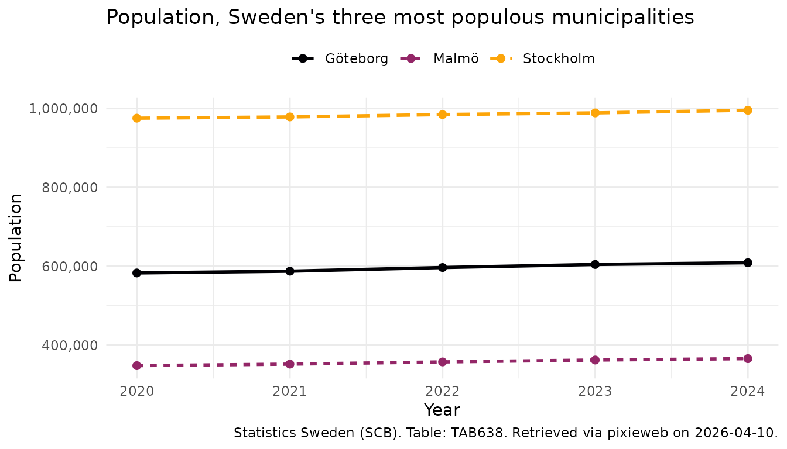

Introduction to pixieweb
Source:vignettes/introduction-to-pixieweb.Rmd
introduction-to-pixieweb.Rmdpixieweb is an R package for discovering,
inspecting and downloading statistical data from PX-Web APIs — the platform used by
Statistics Sweden (SCB), Statistics Norway (SSB), Statistics Finland,
and many other national statistics agencies. This vignette provides an
overview of the methods included in the pixieweb package
and the design principles of the package API. To learn more about the
specifics of functions and to see a full list of the functions included,
please see the Reference
section of the package homepage or run ??pixieweb. For
a quick introduction to the package see the vignette Quick start guide to pixieweb.
Note on pxweb: The excellent pxweb package by rOpenGov already provides comprehensive R access to PX-Web APIs.
pixiewebis not a replacement — it offers an alternative paradigm built around search-then-fetch discovery and progressive disclosure. Choose the workflow that fits your needs.
The design of pixieweb functions is inspired by the
design and functionality provided by several packages in the
tidyverse family. pixieweb uses the base R pipe
(|>) throughout. Some vignette examples use
dplyr, tidyr, and ggplot2 for
data wrangling and visualisation:
install.packages("pixieweb")PX-Web, a platform for national statistical databases
PX-Web is the statistical database platform used by national statistics agencies across the Nordic countries and beyond. Each agency runs its own instance — Statistics Sweden at scb.se, Statistics Norway at ssb.no, Statistics Finland at stat.fi, and many more — but they all share the same underlying API, which comes in two versions:
- v1 — the legacy API, still widely deployed. POST-only data queries, no search endpoint, table discovery requires walking a folder hierarchy.
- v2 — the modern API, launched by SCB in 2024. GET+POST data queries, full-text search, codelists endpoint, server-side saved queries.
pixieweb handles both versions transparently — the
user-facing functions have the same signatures, and only the internal
request building differs.
To get started with PX-Web you might want to visit the web frontend
of any participating agency, or read through the PxWebApi2 documentation
(English). However, you can also use the pixieweb package
to explore data without prior knowledge of the database.
The data model
Data in PX-Web are stored as multi-dimensional data cubes. Each agency publishes hundreds or thousands of tables, and each table defines its own set of variables (dimensions) along which observations are indexed. A typical population table might, for instance, be indexed by region, sex, age and year — while a foreign trade table might be indexed by partner country, commodity group and month.
When downloading data, the user needs to specify which values to include along each variable — or omit the variable entirely, in which case the API returns a pre-computed aggregate (this is called elimination). Every table has its own rules for which variables are mandatory and which are eliminable.
In summary, a PX-Web table is organised along four basic concepts:
- An API instance — a particular agency’s PX-Web database (e.g. SCB, SSB)
- A table — a single statistical data cube published by that agency
- A set of variables — the dimensions of the cube (region, time, sex, product, etc.); each variable has a set of valid values
- One or more content codes — what is actually being measured in each cell (population count, deaths, tax revenue, GDP, …)
Tables with multiple content codes can return data in either long format (one row per observation, one column for the content code) or wide format (one column per content code) — see the section on wide output below.
Additionally, many variables come with one or more codelists — alternative groupings of the values that can be used to aggregate data on the fly. For example, a “Region” variable with 290 municipalities might offer codelists that group them into 21 counties, or into eight NUTS-2 regions.
pixieweb provides a function family for each of these
concepts:
| Level | Discover | Search | Describe | Extract | Values |
|---|---|---|---|---|---|
| API instance | px_api_catalogue() |
— | — | — | — |
| Table | get_tables() |
table_search() |
table_describe() |
table_extract_ids() |
— |
| Variable | get_variables() |
variable_search() |
variable_describe() |
variable_extract_ids() |
variable_values() |
| Codelist | get_codelists() |
— | codelist_describe() |
codelist_extract_ids() |
codelist_values() |
| Data | get_data() |
— | — | — | — |
Connecting to an API
All pixieweb workflows start by connecting to a PX-Web
instance. px_api() accepts a short alias
("scb", "ssb", "statfi", …) or a
full URL:
# Known aliases
scb <- px_api("scb", lang = "en")
ssb <- px_api("ssb", lang = "en")
# Or a custom URL
custom <- px_api("https://my.statbank.example/api/v2/", lang = "en")
# See all known APIs
px_api_catalogue()#> # A tibble: 13 × 7
#> alias description url url_v1 versions langs default_lang
#> <chr> <chr> <chr> <chr> <list> <lis> <chr>
#> 1 scb Statistics Sweden (SCB) http… https… <chr> <chr> sv
#> 2 ssb Statistics Norway (SSB) http… https… <chr> <chr> no
#> 3 statfi Statistics Finland http… https… <chr> <chr> fi
#> 4 statis Statistics Iceland http… https… <chr> <chr> en
#> 5 hagstova Statistics Faroe Islands http… https… <chr> <chr> fo
#> 6 statgl Statistics Greenland http… https… <chr> <chr> da
#> 7 asub Statistics Åland (ÅSUB) http… https… <chr> <chr> sv
#> 8 sjv Swedish Board of Agricultu… http… https… <chr> <chr> sv
#> 9 energi Swedish Energy Agency (Ene… http… https… <chr> <chr> sv
#> 10 fohm Public Health Agency of Sw… http… https… <chr> <chr> sv
#> 11 konj National Institute of Econ… http… https… <chr> <chr> sv
#> 12 msb Swedish Civil Contingencie… http… https… <chr> <chr> sv
#> 13 slu Swedish University of Agri… http… https… <chr> <chr> svFor cross-country comparison and a fuller tour of the multi-API
catalogue, see vignette("multi-api").
Discovering tables: get_tables()
Tables are the central entity. On v2 APIs, get_tables()
sends a server-side search query; on v1 APIs, it walks the folder tree.
In both cases the result is a tibble with rich metadata, one row per
table:
# Search the SCB catalogue for population-related tables
tables <- get_tables(scb, query = "population")
head(tables)#> # A tibble: 6 × 13
#> id title description category updated first_period last_period time_unit
#> <chr> <chr> <chr> <chr> <chr> <chr> <chr> <chr>
#> 1 TAB638 Popul… "" public 2025-0… 1968 2024 Annual
#> 2 TAB1743 Incom… "" public 2015-1… 1995 2013 Annual
#> 3 TAB934 Famil… "" public 2015-1… 1995 2013 Annual
#> 4 TAB4552 Popul… "" public 2025-0… 1960 2023 Annual
#> 5 TAB6473 Popul… "" public 2026-0… 2025M01 2026M01 Monthly
#> 6 TAB1625 Popul… "" public 2025-0… 2000M01 2024M12 Monthly
#> # ℹ 5 more variables: variables <list>, subject_code <chr>, subject_path <chr>,
#> # source <chr>, discontinued <lgl>The table tibble includes subject path, time period range, time unit,
and data source — all of which are searchable by
table_search() (a client-side filter, analogous to
kpi_search() in rKolada).
# Narrow down to tables about municipalities
tables |>
table_search("municipal") |>
table_describe(max_n = 2, format = "md", heading_level = 4)
#> Warning: No tables to describe.table_describe() prints a human-readable summary of each
table. As with all describe functions in the
pixieweb/rKolada/rTrafa family,
you can set format = "md" to produce Markdown output that
can be embedded directly in an R Markdown document by setting the chunk
option results = 'asis'.
Exploring variables: get_variables()
Once you have chosen a table, inspect its variables with
get_variables():
vars <- get_variables(scb, "TAB638")
vars |> variable_describe()#> ── Region (region) ──────────────────────────────────────────────────────────────
#> Values: 312, optional (elimination)
#> First values: 00 Sweden, 01 Stockholm county, 0114 Upplands Väsby, 0115 Vallentuna, 0117 Österåker ... and 307 more
#> Codelists: agg_RegionA-region_2 A-regions, agg_RegionLA1998 Local labour markets 1998, agg_RegionLA2003_1 Local labour markets 2003 ... and 15 more
#>
#> ── Civilstand (marital status) ──────────────────────────────────────────────────
#> Values: 4, optional (elimination)
#> First values: OG single, G married, ÄNKL widowers/widows, SK divorced
#>
#> ── Alder (age) ──────────────────────────────────────────────────────────────────
#> Values: 102, optional (elimination)
#> First values: 0 0 years, 1 1 year, 2 2 years, 3 3 years, 4 4 years ... and 97 more
#> Codelists: agg_Ålder10årJ ´10-year intervals, agg_Ålder5år 5-year intervals, vs_Ålder1årA Age, 1 year age classes ... and 1 more
#>
#> ── Kon (sex) ────────────────────────────────────────────────────────────────────
#> Values: 2, optional (elimination)
#> First values: 1 men, 2 women
#>
#> ── ContentsCode (observations) ──────────────────────────────────────────────────
#> Values: 2, mandatory
#> First values: BE0101N1 Population, BE0101N2 Population growth
#>
#> ── Tid (year) ───────────────────────────────────────────────────────────────────
#> Values: 57, mandatory
#> Time variable: Yes
#> First values: 1968 1968, 1969 1969, 1970 1970, 1971 1971, 1972 1972 ... and 52 moreEach variable has a number of important properties worth knowing about:
-
elimination— can this variable be left out of yourget_data()call? IfTRUE, omitting the variable means the API returns a pre-computed total (e.g. omitting “Sex” gives the total for all sexes). IfFALSE, the variable is mandatory and must be included in the query. -
time— is this the time dimension of the cube? (There is always exactly one.) -
values— the set of available codes and their human-readable labels. -
codelists— alternative groupings of the values (see the “Codelists” section below).
To inspect the available values for a specific variable, use
variable_values():
vars |> variable_values("Region")#> # A tibble: 312 × 2
#> code text
#> <chr> <chr>
#> 1 00 Sweden
#> 2 01 Stockholm county
#> 3 0114 Upplands Väsby
#> 4 0115 Vallentuna
#> 5 0117 Österåker
#> 6 0120 Värmdö
#> 7 0123 Järfälla
#> 8 0125 Ekerö
#> 9 0126 Huddinge
#> 10 0127 Botkyrka
#> # ℹ 302 more rowsDownloading data: get_data()
get_data() is the workhorse function. Provide an API
object, a table ID, and one argument per variable you want to include in
the query:
pop <- get_data(scb, "TAB638",
Region = c("0180", "1480", "1280"),
ContentsCode = "*",
Tid = px_top(5)
)
head(pop)#> # A tibble: 6 × 8
#> table_id Region Region_text ContentsCode ContentsCode_text Tid Tid_text
#> <chr> <chr> <chr> <chr> <chr> <chr> <chr>
#> 1 TAB638 0180 Stockholm BE0101N1 Population 2020 2020
#> 2 TAB638 0180 Stockholm BE0101N1 Population 2021 2021
#> 3 TAB638 0180 Stockholm BE0101N1 Population 2022 2022
#> 4 TAB638 0180 Stockholm BE0101N1 Population 2023 2023
#> 5 TAB638 0180 Stockholm BE0101N1 Population 2024 2024
#> 6 TAB638 0180 Stockholm BE0101N2 Population growth 2020 2020
#> # ℹ 1 more variable: value <dbl>Variables you omit are eliminated
(aggregated) if the API allows it. If a variable is mandatory, you must
include it — get_data() will raise an informative error
otherwise.
Selection helpers
Often you don’t want to hardcode specific codes.
pixieweb provides a family of selection helpers that
translate common wishes into API-compatible arguments:
| Helper | Meaning | API versions |
|---|---|---|
c("0180") |
Specific values | v1, v2 |
"*" |
All values | v1, v2 |
px_top(5) |
First N values (e.g. most recent) | v1, v2 |
px_bottom(3) |
Last N values | v2 only |
px_from("2020") |
From value onward | v2 only |
px_to("2023") |
Up to value | v2 only |
px_range(a, b) |
Inclusive range | v2 only |
Metadata-driven queries: prepare_query()
An alternative approach to downloading data using known codes is to
use the metadata tables to construct queries. For interactive
exploration, prepare_query() inspects the table’s variable
metadata and builds a query with sensible defaults, so that you only
need to specify the variables you care about:
q <- prepare_query(scb, "TAB638",
Region = c("0180", "1480", "1280")
)
q#> ── Query: TAB638 ────────────────────────────────────────────────────────────────
#> Estimated cells: 60 / 150000 (0% of limit)
#>
#> Region = c("0180", "1480", "1280")
#> user override
#> Civilstand = <eliminated>
#> eliminated (4 values available)
#> Alder = <eliminated>
#> eliminated (102 values available)
#> Kon = <eliminated>
#> eliminated (2 values available)
#> ContentsCode = "*"
#> all 2 content variable(s)
#> Tid = px_top(10)
#> latest 10 of 57 periodsThe default strategy is:
-
Content code: all values (
"*") -
Time variable: latest 10 periods
(
px_top(10)) - Eliminable variables: omitted (API aggregates)
-
Small mandatory variables (≤ 22 values): all
(
"*") -
Large mandatory variables: first value
(
px_top(1))
With maximize_selection = TRUE, the function expands
unspecified variables to include as many values as possible while
staying under the API’s cell limit. Once you’re happy, pass the
validated query to get_data():
pop <- get_data(scb, query = q)Codelists
Codelists provide alternative groupings of variable values. They are
useful when you want data at a different aggregation level than the
table’s default. For example, a “Region” variable with 290 Swedish
municipalities might have a codelist that groups them into 21 counties
(vs_RegionLän07):
cls <- get_codelists(scb, "TAB638", "Region")
cls |> codelist_describe(max_n = 3)#> ── agg_RegionA-region_2: A-regions ──────────────────────────────────────────────
#> Type: Aggregation
#> Values: 70 items
#> First: A-01 Stockholms/Södertälje A-region, A-02 Norrtälje A-region, A-03 Enköpings A-region, A-04 Uppsala A-region, A-05 Nyköpings A-region ... and 65 more
#>
#> ── agg_RegionLA1998: Local labour markets 1998 ──────────────────────────────────
#> Type: Aggregation
#> Values: 100 items
#> First: 01001LA Stockholm LA, 04001LA Nyköping-Oxelösund LA, 04002LA Katrineholm LA, 04003LA Eskilstuna LA, 05001LA Linköping LA ... and 95 more
#>
#> ── agg_RegionLA2003_1: Local labour markets 2003 ────────────────────────────────
#> Type: Aggregation
#> Values: 87 items
#> First: LA0301 Stockholm LA, LA0302 Nyköping-Oxelösund LA, LA0303 Eskilstuna LA, LA0304 Linköping LA, LA0305 Norrköping LA ... and 82 moreApply a codelist in a query via the .codelist
argument:
Wide output and multiple content codes
When a table has multiple content codes (e.g. both Population and
Deaths), the default long format has one row per content code per
observation. Use .output = "wide" to pivot the content
codes into separate columns — useful when you want to compute with
several measures (e.g. death rate = Deaths / Population):
demo <- get_data(scb, "TAB638",
Region = "0180",
Tid = px_top(5),
ContentsCode = "*",
.output = "wide"
)
demo#> # A tibble: 5 × 7
#> table_id Region Region_text Tid Tid_text BE0101N1 BE0101N2
#> <chr> <chr> <chr> <chr> <chr> <dbl> <dbl>
#> 1 TAB638 0180 Stockholm 2020 2020 975551 1477
#> 2 TAB638 0180 Stockholm 2021 2021 978770 3219
#> 3 TAB638 0180 Stockholm 2022 2022 984748 5978
#> 4 TAB638 0180 Stockholm 2023 2023 988943 4195
#> 5 TAB638 0180 Stockholm 2024 2024 995574 6631Visualising results
To explore results we can plot the downloaded data using
ggplot2. Note that we convert the time column to a
Date first — years as integer can produce awkward ggplot
breaks like “2020, 2022.5, 2025”, and a proper Date column
lets scale_x_date() place tick marks on whole years. This
is a pattern you will want to use for any time-series analysis across
all three sibling packages (rKolada, pixieweb,
rTrafa):
library("ggplot2")
pop_plot <- pop |>
# Keep only the Population content code (the table also has
# "Population growth"); convert year to Date for nice axis breaks
dplyr::filter(ContentsCode == "BE0101N1") |>
dplyr::mutate(year = as.Date(paste0(Tid, "-01-01")))
ggplot(pop_plot, aes(year, value, colour = Region_text)) +
# One line per region; linetype adds distinction in B/W print
geom_line(aes(linetype = Region_text), linewidth = 1) +
geom_point(size = 2) +
# Years as dates, one tick per year
scale_x_date(date_breaks = "1 year", date_labels = "%Y") +
scale_y_continuous(labels = scales::comma) +
# Colour-blind-friendly palette
scale_colour_viridis_d(option = "B", end = 0.8) +
labs(
title = "Population, Sweden's three most populous municipalities",
x = "Year",
y = "Population",
colour = NULL,
linetype = NULL,
caption = px_cite(pop)
) +
theme_minimal() +
theme(legend.position = "top")
More on ggplot2? See https://ggplot2-book.org/.
Advanced: query composition
For full control over the HTTP request — useful for debugging or when you need to inspect/modify the exact query before sending it — use the low-level query composers:
q <- compose_data_query(scb, "TAB638",
Region = c("0180"),
ContentsCode = "*",
Tid = px_top(3)
)
# Inspect the query
q$url
q$body
# Modify and execute
raw <- execute_query(scb, q$url, q$body)Saved queries (v2 only)
PX-Web v2 supports server-side stored queries — useful for recurring reports. Save a query once, then retrieve it by ID later:
# Save a query
id <- save_query(scb, "TAB638",
Region = "0180",
Tid = px_top(5),
ContentsCode = "*"
)
# Retrieve later
get_saved_query(scb, id)Citation
Always cite your data sources. px_cite() generates a
citation string from the metadata attached to a downloaded data
frame:
px_cite(pop)#> [1] "Statistics Sweden (SCB). Table: TAB638. Retrieved via pixieweb on 2026-04-10."Related packages
pixieweb is part of a family of R packages for Swedish
and Nordic open statistics that share the same design philosophy:
- rKolada — R client for the Kolada database of Swedish municipal and regional Key Performance Indicators
- rTrafa — R client for the Trafa API of Swedish transport statistics
See also pxweb — the original and established PX-Web client for R, by rOpenGov.